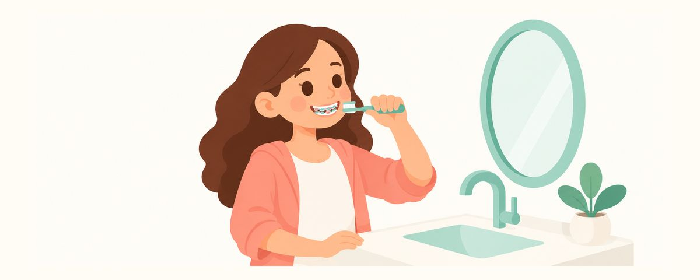

全口矯正通常什麼時候開始：11到13歲矯正與戴矯正器後的刷牙方法
全口矯正多半在乳牙幾乎換完的11到13歲左右開始。這篇整理了為什麼常在這個時期開始、戴上矯正器後刷牙和飲食要怎麼調整，以及要和牙醫師討論的事。
重點一覽
- 全口矯正常在11到13歲左右開始
- 戴矯正器時，每餐飯後都要刷托槽周圍
- 什麼時候開始，評估後再和牙醫師一起決定
到了小學高年級，身邊開始陸續聽到誰誰誰開始矯正了。「我們家孩子也該現在做嗎？」「會不會太晚了？」難免會煩惱。這篇整理了全口矯正常見的開始時間和原因，以及戴上矯正器後在家要注意的事。也很適合和準備開始矯正的孩子一起讀。
為什麼常在11到13歲開始？
大多數的全口矯正，在11到13歲左右開始。原因有兩個：
- 這時乳牙幾乎都換完了，恆牙也大多已經長出來。需要移動的恆牙都到齊了，適合一次整體調整。
- 顎骨還在成長。可以同時利用成長的力量，是移動牙齒的好時機。
不過，這個年紀只是「很多孩子開始的時候」，並不是每個孩子都固定在這時開始。顎骨的形狀和長牙的速度每個孩子都不同，有的孩子早一點處理比較好，有的則等一等比較好。美國齒顎矯正醫師學會建議最晚在7歲做第一次矯正檢查。先及早確認一次，比較容易決定什麼時候開始最好。
關於矯正，還有一點爸媽一定要知道：矯正的成果，由牙齒清潔決定。 戴上矯正器（托槽和鋼絲）後，周圍容易卡食物、堆積牙菌斑。牙菌斑附著太久，矯正器周圍就會留下白色的痕跡（白斑），或出現蛀牙。牙齒好不容易排整齊了，拆掉矯正器的地方卻留下白色痕跡，一定會很難過。所以矯正期間的清潔，和治療本身一樣重要。
戴著矯正器時，請這樣做
刷牙方式會這樣改變：
- 每餐飯後都用含氟牙膏刷牙。上學也記得帶牙刷。
- 把牙刷往上、往下斜放，分別刷托槽的上半部和下半部。想像繞著托槽刷一圈，就很容易。
- 用牙間刷清潔鋼絲下面和托槽之間。
- 用牙線穿引器把牙線穿過鋼絲下方，清潔牙縫。
- 用鏡子確認矯正器周圍有沒有殘留食物或牙菌斑。
飲食也要稍微注意：
- 避免黏牙的糖果，以及冰塊、堅果等硬的食物。矯正器可能會脫落，鋼絲也可能變形。
- 像蘋果這類硬的水果，不要直接整顆啃，切成小塊再吃。
剛戴上矯正器或調整後的幾天，牙齒可能會痠痠的，咀嚼不太舒服。這時可以吃粥或豆腐這類軟的食物，就算痛也不要跳過刷牙。如果不舒服的情況持續很久，請告訴牙醫師。
矯正器刺到口腔時，把矯正用蠟搓成小圓球貼上去。如果鋼絲鬆脫或矯正器掉了，請聯絡診所。
爸媽常犯的錯誤，是覺得矯正期間常去牙科，牙醫師都會幫忙看，就不在家檢查了。矯正看診的重點是移動牙齒，每天的刷牙還是要在家照顧。偶爾和孩子一起照鏡子，確認矯正器周圍乾不乾淨。
常見問題
已經超過11歲，還沒開始矯正，是不是太晚了？
11到13歲只是很多孩子開始的時候，並不是截止期限。需不需要、什麼時候開始，會在評估後和牙醫師討論決定。
矯正期間也要定期檢查和塗氟嗎？
要。矯正期間，定期檢查和塗氟都不能停。矯正器周圍容易蛀牙，所以反而更重要。
矯正器太容易卡食物了，怎麼辦？
基本功是每餐飯後刷牙，每天使用牙間刷和牙線穿引器。在外面不方便馬上刷的話，先用清水用力漱口，有機會時一定要刷。
為什麼拆掉矯正器後會留下白色痕跡？
矯正器周圍的牙菌斑附著太久，牙齒表面會變弱，可能留下白色的痕跡。矯正期間仔細清潔，是最好的預防方法。
出現這些情況，請和牙醫師討論
- 想知道需不需要矯正、什麼時候開始（先做評估）
- 鋼絲鬆脫或矯正器掉了
- 矯正器刺到口腔，貼了蠟還是一直痛
- 矯正器周圍出現白色痕跡或褐色斑點
- 牙齦一直腫脹、流血
在對的時候收到提醒
在牙齒日曆 App 中輸入孩子的出生日期（或預產期），這些文章就會在需要的時候以提醒的方式送達。免費使用，無須註冊。
參考資料
本App中的資訊僅供一般衛教參考，無法取代專業牙科診療。關於孩子的狀況，請諮詢牙醫師。